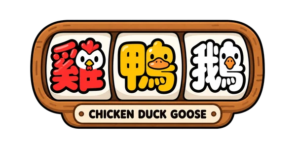
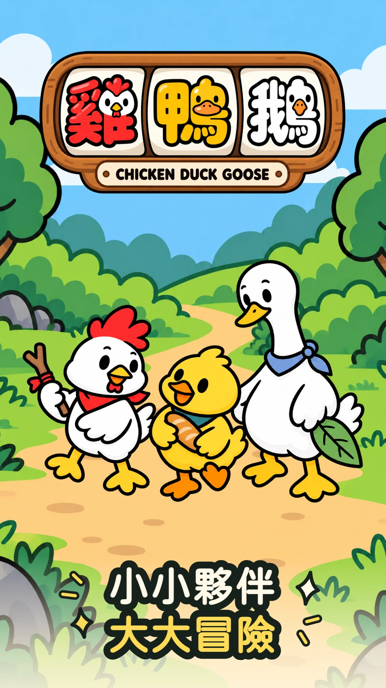
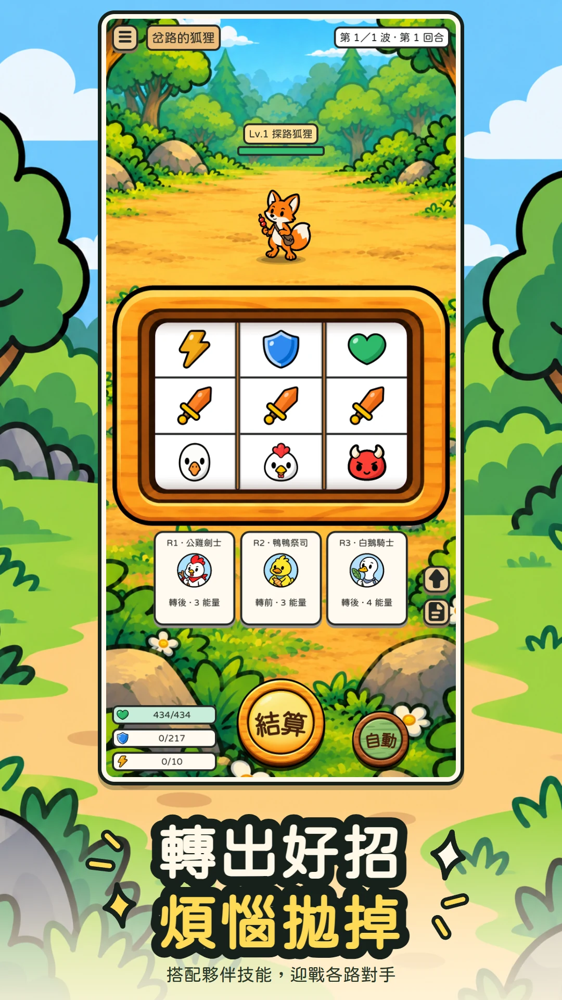
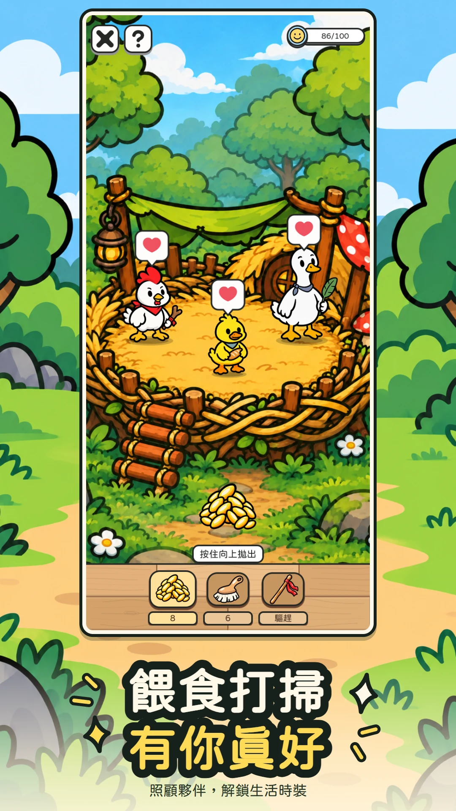
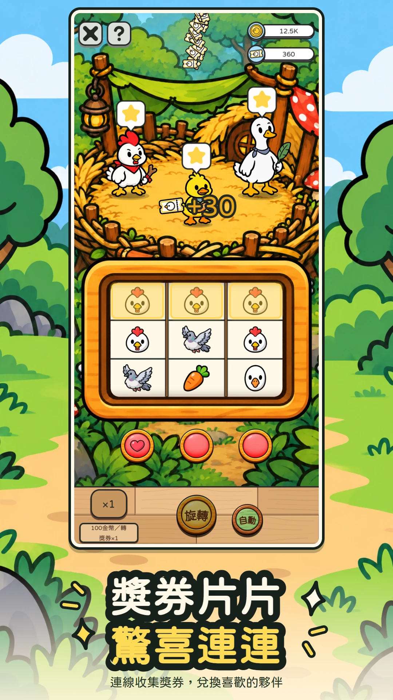
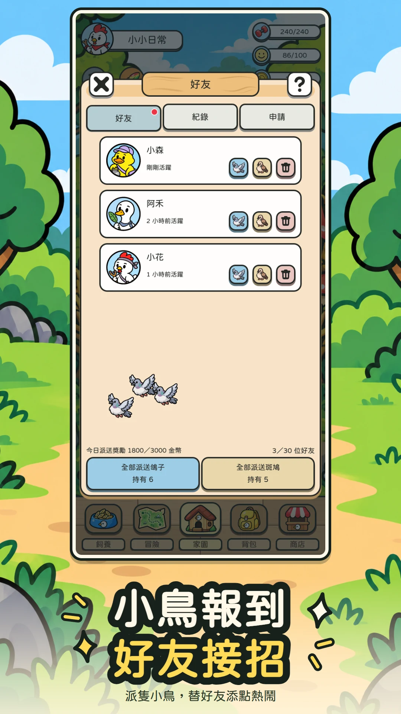

拉霸戰鬥
攻擊、防禦、回復與鳥圖示，組成每一回合的戰鬥。搭配夥伴技能轉換圖示、調整盤面，把握連線與獎勵機帶來的機會。

CHICKEN DUCK GOOSE
和雞鴨鵝一起，把每一次旋轉
變成新的冒險。
拉霸戰鬥、夥伴養成，還有一個可以回去的家。
在生活的空檔，陪這群小傢伙玩上一會。
Android · Windows刪檔 Beta 測試中
左右滑動或使用箭頭，查看遊戲畫面。





目前瀏覽第 1 張，共 5 張
攻擊、防禦、回復與鳥圖示，組成每一回合的戰鬥。搭配夥伴技能轉換圖示、調整盤面，把握連線與獎勵機帶來的機會。
每位雞、鴨、鵝夥伴都有自己的個性與技能。安排主戰與支援，培養技能、搭配羽毛，慢慢組成適合自己的隊伍。
換上喜歡的背景，餵食、照顧，和夥伴互動。冒險之外，也有屬於這群小傢伙的日常。
和樂樂、起司、霍華一起出發，在路途中認識新的朋友，也遇上各種麻煩。看看他們聊些什麼、又會把事情弄成什麼樣子。
想試試手氣時，也能投入遊戲中獲得的金幣，轉動抽獎機、收集獎券，再到商店兌換夥伴。巨大鳥挑戰和彩色羽毛連線，也等著你遇見。
《雞鴨鵝》刪檔 Beta 測試版 0.1.12
Android 7.0 以上
下載 APK 後依裝置提示安裝。
Windows 10／11 x64
完整解壓縮後，開啟最外層的 CDG.exe。更新時保留 Data 資料夾。
目前為刪檔 Beta 測試，主要用於驗證玩法與收集玩家回饋。測試資料日後會清除，請勿將測試期間的資產與進度視為永久保留。
歡迎告訴我們哪些地方有趣、哪些地方不順手。遇到問題時，可使用遊戲內的回報功能，附上發生情況與重現步驟。